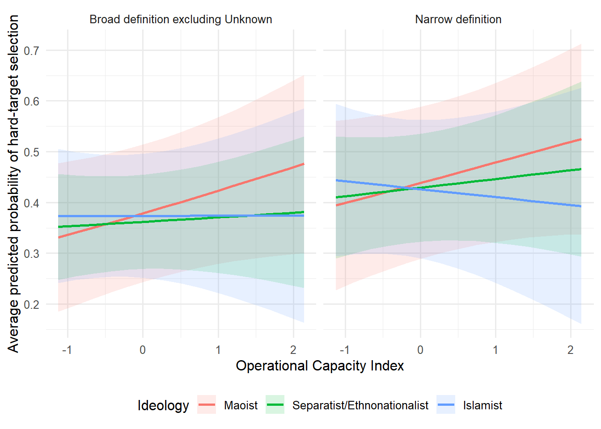

Show R code
#| label: setup
#| include: false
# Install only if necessary:
# install.packages(c(
# "readxl", "dplyr", "lme4",
# "broom.mixed", "emmeans",
# "marginaleffects", "ggplot2", "knitr"
# ))
library(readxl)
library(dplyr)
library(lme4)
library(broom.mixed)
library(emmeans)
library(marginaleffects)
library(ggplot2)
library(knitr)
options(scipen = 999)
## Import data
#| label: import-data
file_path <- paste0(
"D:/PhD in Political Science-UTD/",
"Fall 2026/",
"Methods of Data Collection and Production/",
"avinash13808138.github.io/",
"GTD-India_Avinash_with_Districts_and_OCI_",
"MatchedData_with_Controls_Final 2(2).xlsx"
)
if (!file.exists(file_path)) {
stop(
paste(
"Excel file not found at:",
file_path
)
)
}
data_raw <- read_excel(
file_path,
sheet = "Sheet1"
)
## Define target categories
#| label: target-definitions
hard_targets <- c(
"Police",
"Military",
"Government (General)",
"Government (Diplomatic)",
"Airports & Aircraft"
)
narrow_soft_targets <- c(
"Private Citizens & Property",
"Business",
"Educational Institution",
"Religious Figures/Institutions",
"Journalists & Media",
"NGO",
"Tourists",
"Food or Water Supply"
)
all_target_categories <- sort(
unique(
data_raw$targtype1_txt
)
)
broad_soft_targets <- setdiff(
all_target_categories,
c(
hard_targets,
"Unknown"
)
)
target_definition_table <- data.frame(
Target = all_target_categories,
Narrow = case_when(
all_target_categories %in% hard_targets ~
"Hard",
all_target_categories %in% narrow_soft_targets ~
"Soft",
TRUE ~
"Excluded"
),
Broad = case_when(
all_target_categories %in% hard_targets ~
"Hard",
all_target_categories == "Unknown" ~
"Excluded",
TRUE ~
"Soft"
)
)
kable(
target_definition_table,
caption = "Alternative Hard/Soft Target Classifications"
)| Target | Narrow | Broad |
|---|---|---|
| Airports & Aircraft | Hard | Hard |
| Business | Soft | Soft |
| Educational Institution | Soft | Soft |
| Food or Water Supply | Soft | Soft |
| Government (Diplomatic) | Hard | Hard |
| Government (General) | Hard | Hard |
| Journalists & Media | Soft | Soft |
| Maritime | Excluded | Soft |
| Military | Hard | Hard |
| NGO | Soft | Soft |
| Other | Excluded | Soft |
| Police | Hard | Hard |
| Private Citizens & Property | Soft | Soft |
| Religious Figures/Institutions | Soft | Soft |
| Telecommunication | Excluded | Soft |
| Terrorists/Non-State Militia | Excluded | Soft |
| Tourists | Soft | Soft |
| Transportation | Excluded | Soft |
| Unknown | Excluded | Excluded |
| Utilities | Excluded | Soft |
| Violent Political Party | Excluded | Soft |
Show R code
## Construct the two outcome variables
#| label: construct-outcomes
target_data <- data_raw |>
mutate(
target_narrow = case_when(
targtype1_txt %in% hard_targets ~ 1,
targtype1_txt %in%
narrow_soft_targets ~ 0,
TRUE ~ NA_real_
),
target_broad = case_when(
targtype1_txt %in% hard_targets ~ 1,
targtype1_txt == "Unknown" ~ NA_real_,
TRUE ~ 0
)
)
## Prepare each analytical sample
#| label: prepare-model-data
prepare_target_sample <- function(
data,
outcome_variable
) {
data |>
filter(
ideology_category %in% c(
"Maoist",
"Separatist/Ethnonationalist",
"Islamist"
),
!is.na(OCI)
) |>
transmute(
hard_target =
as.numeric(
.data[[outcome_variable]]
),
organization =
factor(gname),
organization_year =
interaction(
gname,
iyear,
drop = TRUE
),
year =
factor(iyear),
ideology = factor(
ideology_category,
levels = c(
"Maoist",
"Separatist/Ethnonationalist",
"Islamist"
)
),
conflict_region = factor(
conflict_region,
levels = c(
"Rest of India",
"Kashmir",
"Maoist-affected belt",
"Northeast"
)
),
OCI =
as.numeric(OCI),
ln_lagged_district_intensity =
log1p(
as.numeric(
lagged_district_terrorism_intensity
)
)
) |>
filter(
if_all(
everything(),
~ !is.na(.x)
)
)
}
narrow_sample <- prepare_target_sample(
target_data,
"target_narrow"
)
broad_sample <- prepare_target_sample(
target_data,
"target_broad"
)
## Report sample composition
#| label: target-sample-summary
summarize_target_sample <- function(
data,
label
) {
data.frame(
Definition = label,
Incidents =
nrow(data),
Organizations =
n_distinct(data$organization),
Organization_Years =
n_distinct(data$organization_year),
Hard_Targets =
sum(data$hard_target == 1),
Soft_Targets =
sum(data$hard_target == 0),
Percent_Hard =
100 * mean(data$hard_target == 1)
)
}
target_sample_summary <- bind_rows(
summarize_target_sample(
narrow_sample,
"Narrow definition"
),
summarize_target_sample(
broad_sample,
"Broad definition excluding Unknown"
)
)
kable(
target_sample_summary,
digits = 2,
caption = "Sample Composition Under Alternative Target Definitions"
)| Definition | Incidents | Organizations | Organization_Years | Hard_Targets | Soft_Targets | Percent_Hard |
|---|---|---|---|---|---|---|
| Narrow definition | 6419 | 112 | 544 | 3265 | 3154 | 50.86 |
| Broad definition excluding Unknown | 7282 | 114 | 567 | 3265 | 4017 | 44.84 |
Show R code
## Estimate Model 2
#| label: target-model-function
estimate_target_model <- function(data) {
glmer(
hard_target ~
ideology * OCI +
conflict_region +
ln_lagged_district_intensity +
year +
(1 | organization),
data = data,
family = binomial(
link = "logit"
),
# Faster initial analysis
nAGQ = 0,
control = glmerControl(
optimizer = "bobyqa",
optCtrl = list(
maxfun = 100000
),
calc.derivs = FALSE
)
)
}
#| label: estimate-target-models
target_output_directory <-
"robustness_3_target_outputs"
if (!dir.exists(target_output_directory)) {
dir.create(target_output_directory)
}
target_models <- list()
target_samples <- list(
"Narrow definition" =
narrow_sample,
"Broad definition excluding Unknown" =
broad_sample
)
for (model_name in names(target_samples)) {
safe_name <- paste0(
"model_",
gsub(
"[^A-Za-z0-9]+",
"_",
tolower(model_name)
),
".rds"
)
model_path <- file.path(
target_output_directory,
safe_name
)
if (file.exists(model_path)) {
cat(
"Loading:",
model_name,
"\n"
)
target_models[[model_name]] <-
readRDS(model_path)
} else {
cat(
"Estimating:",
model_name,
"\n"
)
target_models[[model_name]] <-
estimate_target_model(
target_samples[[model_name]]
)
saveRDS(
target_models[[model_name]],
model_path
)
}
}Loading: Narrow definition
Loading: Broad definition excluding Unknown Show R code
## Extract OCI coefficients and interactions
#| label: target-coefficients
extract_target_coefficients <- function(
model,
model_label
) {
tidy(
model,
effects = "fixed",
conf.int = TRUE,
conf.method = "Wald"
) |>
filter(
term %in% c(
"OCI",
"ideologySeparatist/Ethnonationalist:OCI",
"ideologyIslamist:OCI"
)
) |>
mutate(
Model = model_label,
Predictor = recode(
term,
"OCI" =
"Maoist OCI slope",
"ideologySeparatist/Ethnonationalist:OCI" =
"Separatist × OCI",
"ideologyIslamist:OCI" =
"Islamist × OCI"
)
) |>
select(
Model,
Predictor,
Coefficient = estimate,
`Standard Error` = std.error,
`95% CI Lower` = conf.low,
`95% CI Upper` = conf.high,
`p-value` = p.value
)
}
target_coefficient_results <- bind_rows(
lapply(
names(target_models),
function(model_name) {
extract_target_coefficients(
target_models[[model_name]],
model_name
)
}
)
)
kable(
target_coefficient_results,
digits = 3,
caption = "OCI Results Under Alternative Target Definitions"
)| Model | Predictor | Coefficient | Standard Error | 95% CI Lower | 95% CI Upper | p-value |
|---|---|---|---|---|---|---|
| Narrow definition | Maoist OCI slope | 0.175 | 0.135 | -0.088 | 0.439 | 0.192 |
| Narrow definition | Separatist × OCI | -0.100 | 0.185 | -0.463 | 0.263 | 0.590 |
| Narrow definition | Islamist × OCI | -0.245 | 0.220 | -0.677 | 0.187 | 0.267 |
| Broad definition excluding Unknown | Maoist OCI slope | 0.202 | 0.125 | -0.044 | 0.448 | 0.107 |
| Broad definition excluding Unknown | Separatist × OCI | -0.161 | 0.169 | -0.492 | 0.170 | 0.341 |
| Broad definition excluding Unknown | Islamist × OCI | -0.201 | 0.203 | -0.600 | 0.198 | 0.324 |
Show R code
## Ideology-specific OCI slopes
#| label: target-slopes
extract_target_slopes <- function(
model,
model_label
) {
slope_table <- as.data.frame(
summary(
emtrends(
model,
specs = ~ ideology,
var = "OCI"
),
infer = c(TRUE, TRUE)
)
)
lower_column <- intersect(
c("asymp.LCL", "lower.CL"),
names(slope_table)
)[1]
upper_column <- intersect(
c("asymp.UCL", "upper.CL"),
names(slope_table)
)[1]
slope_table |>
mutate(
Model = model_label,
CI_Lower = .data[[lower_column]],
CI_Upper = .data[[upper_column]]
) |>
transmute(
Model,
Ideology = ideology,
`OCI Slope` = OCI.trend,
`Standard Error` = SE,
`95% CI Lower` = CI_Lower,
`95% CI Upper` = CI_Upper,
`p-value` = p.value
)
}
target_slope_results <- bind_rows(
lapply(
names(target_models),
function(model_name) {
extract_target_slopes(
target_models[[model_name]],
model_name
)
}
)
)
kable(
target_slope_results,
digits = 3,
caption = "Ideology-Specific OCI Slopes"
)| Model | Ideology | OCI Slope | Standard Error | 95% CI Lower | 95% CI Upper | p-value |
|---|---|---|---|---|---|---|
| Narrow definition | Maoist | 0.175 | 0.135 | -0.088 | 0.439 | 0.192 |
| Narrow definition | Separatist/Ethnonationalist | 0.075 | 0.132 | -0.183 | 0.334 | 0.568 |
| Narrow definition | Islamist | -0.069 | 0.181 | -0.424 | 0.285 | 0.701 |
| Broad definition excluding Unknown | Maoist | 0.202 | 0.125 | -0.044 | 0.448 | 0.107 |
| Broad definition excluding Unknown | Separatist/Ethnonationalist | 0.041 | 0.120 | -0.194 | 0.277 | 0.731 |
| Broad definition excluding Unknown | Islamist | 0.001 | 0.166 | -0.325 | 0.327 | 0.994 |
Show R code
## Average predicted probabilities
## This uses empirical averaging over the observed covariate distributions.
#| label: average-predictions
calculate_average_predictions <- function(
model,
data,
model_label
) {
oci_grid <- seq(
quantile(
data$OCI,
0.025,
na.rm = TRUE
),
quantile(
data$OCI,
0.975,
na.rm = TRUE
),
length.out = 15
)
prediction_results <- avg_predictions(
model,
newdata = datagrid(
model = model,
grid_type = "counterfactual",
OCI = oci_grid,
ideology = levels(data$ideology)
),
by = c(
"ideology",
"OCI"
),
re.form = NA
)
as.data.frame(prediction_results) |>
mutate(
Model = model_label
)
}
prediction_results <- bind_rows(
calculate_average_predictions(
target_models[["Narrow definition"]],
narrow_sample,
"Narrow definition"
),
calculate_average_predictions(
target_models[[
"Broad definition excluding Unknown"
]],
broad_sample,
"Broad definition excluding Unknown"
)
)
kable(
prediction_results,
digits = 3,
caption = "Average Predicted Probabilities"
)| ideology | OCI | estimate | std.error | statistic | p.value | s.value | conf.low | conf.high | df | Model |
|---|---|---|---|---|---|---|---|---|---|---|
| Maoist | -1.126 | 0.394 | 0.085 | 4.640 | 0.000 | 18.132 | 0.228 | 0.561 | Inf | Narrow definition |
| Maoist | -0.892 | 0.403 | 0.082 | 4.898 | 0.000 | 19.976 | 0.242 | 0.565 | Inf | Narrow definition |
| Maoist | -0.659 | 0.412 | 0.080 | 5.148 | 0.000 | 21.860 | 0.255 | 0.569 | Inf | Narrow definition |
| Maoist | -0.425 | 0.421 | 0.078 | 5.384 | 0.000 | 23.708 | 0.268 | 0.575 | Inf | Narrow definition |
| Maoist | -0.192 | 0.431 | 0.077 | 5.593 | 0.000 | 25.421 | 0.280 | 0.582 | Inf | Narrow definition |
| Maoist | 0.042 | 0.440 | 0.076 | 5.768 | 0.000 | 26.896 | 0.291 | 0.590 | Inf | Narrow definition |
| Maoist | 0.275 | 0.449 | 0.076 | 5.900 | 0.000 | 28.036 | 0.300 | 0.599 | Inf | Narrow definition |
| Maoist | 0.509 | 0.459 | 0.077 | 5.984 | 0.000 | 28.774 | 0.309 | 0.609 | Inf | Narrow definition |
| Maoist | 0.742 | 0.468 | 0.078 | 6.018 | 0.000 | 29.079 | 0.316 | 0.621 | Inf | Narrow definition |
| Maoist | 0.975 | 0.478 | 0.080 | 6.006 | 0.000 | 28.967 | 0.322 | 0.634 | Inf | Narrow definition |
| Maoist | 1.209 | 0.487 | 0.082 | 5.952 | 0.000 | 28.494 | 0.327 | 0.648 | Inf | Narrow definition |
| Maoist | 1.442 | 0.497 | 0.085 | 5.865 | 0.000 | 27.733 | 0.331 | 0.663 | Inf | Narrow definition |
| Maoist | 1.676 | 0.506 | 0.088 | 5.753 | 0.000 | 26.769 | 0.334 | 0.679 | Inf | Narrow definition |
| Maoist | 1.909 | 0.516 | 0.092 | 5.625 | 0.000 | 25.682 | 0.336 | 0.695 | Inf | Narrow definition |
| Maoist | 2.143 | 0.525 | 0.096 | 5.486 | 0.000 | 24.538 | 0.338 | 0.713 | Inf | Narrow definition |
| Separatist/Ethnonationalist | -1.126 | 0.410 | 0.061 | 6.703 | 0.000 | 35.508 | 0.290 | 0.530 | Inf | Narrow definition |
| Separatist/Ethnonationalist | -0.892 | 0.414 | 0.058 | 7.101 | 0.000 | 39.556 | 0.300 | 0.528 | Inf | Narrow definition |
| Separatist/Ethnonationalist | -0.659 | 0.418 | 0.056 | 7.452 | 0.000 | 43.301 | 0.308 | 0.528 | Inf | Narrow definition |
| Separatist/Ethnonationalist | -0.425 | 0.422 | 0.055 | 7.721 | 0.000 | 46.295 | 0.315 | 0.529 | Inf | Narrow definition |
| Separatist/Ethnonationalist | -0.192 | 0.426 | 0.054 | 7.880 | 0.000 | 48.116 | 0.320 | 0.532 | Inf | Narrow definition |
| Separatist/Ethnonationalist | 0.042 | 0.430 | 0.054 | 7.912 | 0.000 | 48.488 | 0.323 | 0.536 | Inf | Narrow definition |
| Separatist/Ethnonationalist | 0.275 | 0.434 | 0.055 | 7.817 | 0.000 | 47.397 | 0.325 | 0.543 | Inf | Narrow definition |
| Separatist/Ethnonationalist | 0.509 | 0.438 | 0.057 | 7.614 | 0.000 | 45.092 | 0.325 | 0.550 | Inf | Narrow definition |
| Separatist/Ethnonationalist | 0.742 | 0.442 | 0.060 | 7.329 | 0.000 | 41.975 | 0.324 | 0.560 | Inf | Narrow definition |
| Separatist/Ethnonationalist | 0.975 | 0.446 | 0.064 | 6.995 | 0.000 | 38.454 | 0.321 | 0.571 | Inf | Narrow definition |
| Separatist/Ethnonationalist | 1.209 | 0.450 | 0.068 | 6.638 | 0.000 | 34.868 | 0.317 | 0.583 | Inf | Narrow definition |
| Separatist/Ethnonationalist | 1.442 | 0.454 | 0.072 | 6.279 | 0.000 | 31.447 | 0.312 | 0.596 | Inf | Narrow definition |
| Separatist/Ethnonationalist | 1.676 | 0.458 | 0.077 | 5.930 | 0.000 | 28.300 | 0.307 | 0.609 | Inf | Narrow definition |
| Separatist/Ethnonationalist | 1.909 | 0.462 | 0.082 | 5.600 | 0.000 | 25.478 | 0.300 | 0.624 | Inf | Narrow definition |
| Separatist/Ethnonationalist | 2.143 | 0.466 | 0.088 | 5.294 | 0.000 | 22.996 | 0.293 | 0.639 | Inf | Narrow definition |
| Islamist | -1.126 | 0.444 | 0.077 | 5.800 | 0.000 | 27.166 | 0.294 | 0.594 | Inf | Narrow definition |
| Islamist | -0.892 | 0.440 | 0.073 | 6.052 | 0.000 | 29.378 | 0.298 | 0.583 | Inf | Narrow definition |
| Islamist | -0.659 | 0.436 | 0.070 | 6.228 | 0.000 | 30.977 | 0.299 | 0.574 | Inf | Narrow definition |
| Islamist | -0.425 | 0.433 | 0.069 | 6.300 | 0.000 | 31.644 | 0.298 | 0.567 | Inf | Narrow definition |
| Islamist | -0.192 | 0.429 | 0.069 | 6.252 | 0.000 | 31.205 | 0.295 | 0.564 | Inf | Narrow definition |
| Islamist | 0.042 | 0.425 | 0.070 | 6.089 | 0.000 | 29.715 | 0.289 | 0.562 | Inf | Narrow definition |
| Islamist | 0.275 | 0.422 | 0.072 | 5.831 | 0.000 | 27.439 | 0.280 | 0.564 | Inf | Narrow definition |
| Islamist | 0.509 | 0.418 | 0.076 | 5.510 | 0.000 | 24.736 | 0.269 | 0.567 | Inf | Narrow definition |
| Islamist | 0.742 | 0.415 | 0.080 | 5.159 | 0.000 | 21.939 | 0.257 | 0.572 | Inf | Narrow definition |
| Islamist | 0.975 | 0.411 | 0.086 | 4.801 | 0.000 | 19.271 | 0.243 | 0.579 | Inf | Narrow definition |
| Islamist | 1.209 | 0.407 | 0.091 | 4.455 | 0.000 | 16.860 | 0.228 | 0.586 | Inf | Narrow definition |
| Islamist | 1.442 | 0.404 | 0.098 | 4.130 | 0.000 | 14.749 | 0.212 | 0.595 | Inf | Narrow definition |
| Islamist | 1.676 | 0.400 | 0.104 | 3.830 | 0.000 | 12.932 | 0.195 | 0.605 | Inf | Narrow definition |
| Islamist | 1.909 | 0.396 | 0.111 | 3.558 | 0.000 | 11.385 | 0.178 | 0.615 | Inf | Narrow definition |
| Islamist | 2.143 | 0.393 | 0.119 | 3.311 | 0.001 | 10.073 | 0.160 | 0.625 | Inf | Narrow definition |
| Maoist | -1.126 | 0.331 | 0.075 | 4.437 | 0.000 | 16.742 | 0.185 | 0.477 | Inf | Broad definition excluding Unknown |
| Maoist | -0.892 | 0.340 | 0.073 | 4.677 | 0.000 | 18.393 | 0.198 | 0.483 | Inf | Broad definition excluding Unknown |
| Maoist | -0.659 | 0.350 | 0.071 | 4.912 | 0.000 | 20.080 | 0.210 | 0.490 | Inf | Broad definition excluding Unknown |
| Maoist | -0.425 | 0.360 | 0.070 | 5.132 | 0.000 | 21.738 | 0.223 | 0.498 | Inf | Broad definition excluding Unknown |
| Maoist | -0.192 | 0.370 | 0.069 | 5.330 | 0.000 | 23.282 | 0.234 | 0.506 | Inf | Broad definition excluding Unknown |
| Maoist | 0.042 | 0.380 | 0.069 | 5.497 | 0.000 | 24.626 | 0.245 | 0.516 | Inf | Broad definition excluding Unknown |
| Maoist | 0.275 | 0.391 | 0.069 | 5.625 | 0.000 | 25.686 | 0.255 | 0.527 | Inf | Broad definition excluding Unknown |
| Maoist | 0.509 | 0.401 | 0.070 | 5.710 | 0.000 | 26.402 | 0.263 | 0.539 | Inf | Broad definition excluding Unknown |
| Maoist | 0.742 | 0.412 | 0.072 | 5.751 | 0.000 | 26.744 | 0.271 | 0.552 | Inf | Broad definition excluding Unknown |
| Maoist | 0.975 | 0.422 | 0.073 | 5.748 | 0.000 | 26.722 | 0.278 | 0.566 | Inf | Broad definition excluding Unknown |
| Maoist | 1.209 | 0.433 | 0.076 | 5.707 | 0.000 | 26.377 | 0.284 | 0.581 | Inf | Broad definition excluding Unknown |
| Maoist | 1.442 | 0.443 | 0.079 | 5.635 | 0.000 | 25.772 | 0.289 | 0.598 | Inf | Broad definition excluding Unknown |
| Maoist | 1.676 | 0.454 | 0.082 | 5.540 | 0.000 | 24.976 | 0.294 | 0.615 | Inf | Broad definition excluding Unknown |
| Maoist | 1.909 | 0.465 | 0.086 | 5.427 | 0.000 | 24.059 | 0.297 | 0.633 | Inf | Broad definition excluding Unknown |
| Maoist | 2.143 | 0.476 | 0.090 | 5.305 | 0.000 | 23.081 | 0.300 | 0.652 | Inf | Broad definition excluding Unknown |
| Separatist/Ethnonationalist | -1.126 | 0.352 | 0.053 | 6.615 | 0.000 | 34.649 | 0.248 | 0.456 | Inf | Broad definition excluding Unknown |
| Separatist/Ethnonationalist | -0.892 | 0.354 | 0.051 | 6.969 | 0.000 | 38.193 | 0.255 | 0.454 | Inf | Broad definition excluding Unknown |
| Separatist/Ethnonationalist | -0.659 | 0.356 | 0.049 | 7.273 | 0.000 | 41.376 | 0.260 | 0.452 | Inf | Broad definition excluding Unknown |
| Separatist/Ethnonationalist | -0.425 | 0.358 | 0.048 | 7.498 | 0.000 | 43.812 | 0.265 | 0.452 | Inf | Broad definition excluding Unknown |
| Separatist/Ethnonationalist | -0.192 | 0.360 | 0.047 | 7.619 | 0.000 | 45.155 | 0.268 | 0.453 | Inf | Broad definition excluding Unknown |
| Separatist/Ethnonationalist | 0.042 | 0.362 | 0.048 | 7.622 | 0.000 | 45.183 | 0.269 | 0.455 | Inf | Broad definition excluding Unknown |
| Separatist/Ethnonationalist | 0.275 | 0.364 | 0.049 | 7.507 | 0.000 | 43.915 | 0.269 | 0.459 | Inf | Broad definition excluding Unknown |
| Separatist/Ethnonationalist | 0.509 | 0.366 | 0.050 | 7.294 | 0.000 | 41.594 | 0.268 | 0.465 | Inf | Broad definition excluding Unknown |
| Separatist/Ethnonationalist | 0.742 | 0.368 | 0.053 | 7.007 | 0.000 | 38.578 | 0.265 | 0.471 | Inf | Broad definition excluding Unknown |
| Separatist/Ethnonationalist | 0.975 | 0.370 | 0.056 | 6.675 | 0.000 | 35.231 | 0.262 | 0.479 | Inf | Broad definition excluding Unknown |
| Separatist/Ethnonationalist | 1.209 | 0.373 | 0.059 | 6.321 | 0.000 | 31.846 | 0.257 | 0.488 | Inf | Broad definition excluding Unknown |
| Separatist/Ethnonationalist | 1.442 | 0.375 | 0.063 | 5.967 | 0.000 | 28.626 | 0.252 | 0.498 | Inf | Broad definition excluding Unknown |
| Separatist/Ethnonationalist | 1.676 | 0.377 | 0.067 | 5.623 | 0.000 | 25.667 | 0.245 | 0.508 | Inf | Broad definition excluding Unknown |
| Separatist/Ethnonationalist | 1.909 | 0.379 | 0.071 | 5.298 | 0.000 | 23.024 | 0.239 | 0.519 | Inf | Broad definition excluding Unknown |
| Separatist/Ethnonationalist | 2.143 | 0.381 | 0.076 | 4.994 | 0.000 | 20.690 | 0.231 | 0.530 | Inf | Broad definition excluding Unknown |
| Islamist | -1.126 | 0.373 | 0.067 | 5.537 | 0.000 | 24.954 | 0.241 | 0.505 | Inf | Broad definition excluding Unknown |
| Islamist | -0.892 | 0.373 | 0.064 | 5.804 | 0.000 | 27.198 | 0.247 | 0.499 | Inf | Broad definition excluding Unknown |
| Islamist | -0.659 | 0.373 | 0.062 | 6.001 | 0.000 | 28.930 | 0.251 | 0.495 | Inf | Broad definition excluding Unknown |
| Islamist | -0.425 | 0.373 | 0.061 | 6.103 | 0.000 | 29.841 | 0.254 | 0.493 | Inf | Broad definition excluding Unknown |
| Islamist | -0.192 | 0.374 | 0.061 | 6.094 | 0.000 | 29.761 | 0.253 | 0.494 | Inf | Broad definition excluding Unknown |
| Islamist | 0.042 | 0.374 | 0.063 | 5.974 | 0.000 | 28.689 | 0.251 | 0.496 | Inf | Broad definition excluding Unknown |
| Islamist | 0.275 | 0.374 | 0.065 | 5.764 | 0.000 | 26.856 | 0.247 | 0.501 | Inf | Broad definition excluding Unknown |
| Islamist | 0.509 | 0.374 | 0.068 | 5.489 | 0.000 | 24.560 | 0.240 | 0.507 | Inf | Broad definition excluding Unknown |
| Islamist | 0.742 | 0.374 | 0.072 | 5.179 | 0.000 | 22.095 | 0.232 | 0.515 | Inf | Broad definition excluding Unknown |
| Islamist | 0.975 | 0.374 | 0.077 | 4.858 | 0.000 | 19.686 | 0.223 | 0.525 | Inf | Broad definition excluding Unknown |
| Islamist | 1.209 | 0.374 | 0.082 | 4.543 | 0.000 | 17.461 | 0.213 | 0.535 | Inf | Broad definition excluding Unknown |
| Islamist | 1.442 | 0.374 | 0.088 | 4.243 | 0.000 | 15.467 | 0.201 | 0.547 | Inf | Broad definition excluding Unknown |
| Islamist | 1.676 | 0.374 | 0.094 | 3.964 | 0.000 | 13.730 | 0.189 | 0.559 | Inf | Broad definition excluding Unknown |
| Islamist | 1.909 | 0.374 | 0.101 | 3.708 | 0.000 | 12.227 | 0.176 | 0.572 | Inf | Broad definition excluding Unknown |
| Islamist | 2.143 | 0.374 | 0.108 | 3.476 | 0.001 | 10.938 | 0.163 | 0.585 | Inf | Broad definition excluding Unknown |
Show R code
## Predicted-probability graph
#| label: probability-plot
#| fig-width: 9
#| fig-height: 6
ggplot(
prediction_results,
aes(
x = OCI,
y = estimate,
color = ideology,
fill = ideology
)
) +
geom_ribbon(
aes(
ymin = conf.low,
ymax = conf.high
),
alpha = 0.15,
color = NA
) +
geom_line(
linewidth = 1
) +
facet_wrap(
~ Model
) +
labs(
x = "Operational Capacity Index",
y = "Average predicted probability of hard-target selection",
color = "Ideology",
fill = "Ideology"
) +
theme_minimal(
base_size = 12
) +
theme(
legend.position = "bottom"
)
Show R code
## Save results
#| label: save-target-results
write.csv(
target_definition_table,
file.path(
target_output_directory,
"target_classification_table.csv"
),
row.names = FALSE
)
write.csv(
target_sample_summary,
file.path(
target_output_directory,
"target_sample_summary.csv"
),
row.names = FALSE
)
write.csv(
target_coefficient_results,
file.path(
target_output_directory,
"target_definition_coefficients.csv"
),
row.names = FALSE
)
write.csv(
target_slope_results,
file.path(
target_output_directory,
"target_definition_slopes.csv"
),
row.names = FALSE
)
write.csv(
prediction_results,
file.path(
target_output_directory,
"target_definition_predictions.csv"
),
row.names = FALSE
)
ggsave(
filename = file.path(
target_output_directory,
"target_definition_predictions.png"
),
width = 9,
height = 6,
dpi = 300
)